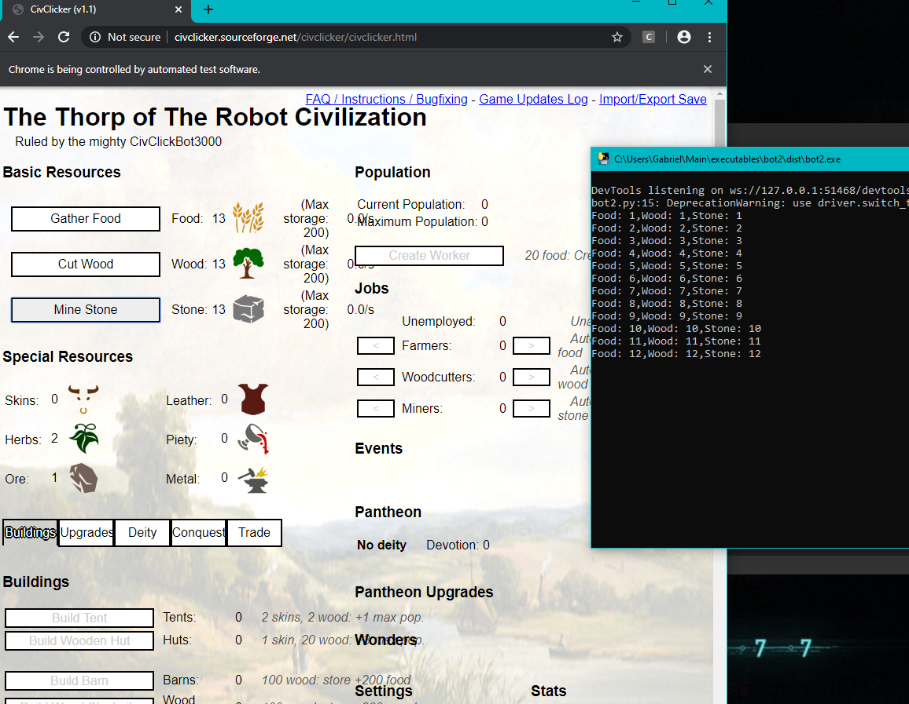
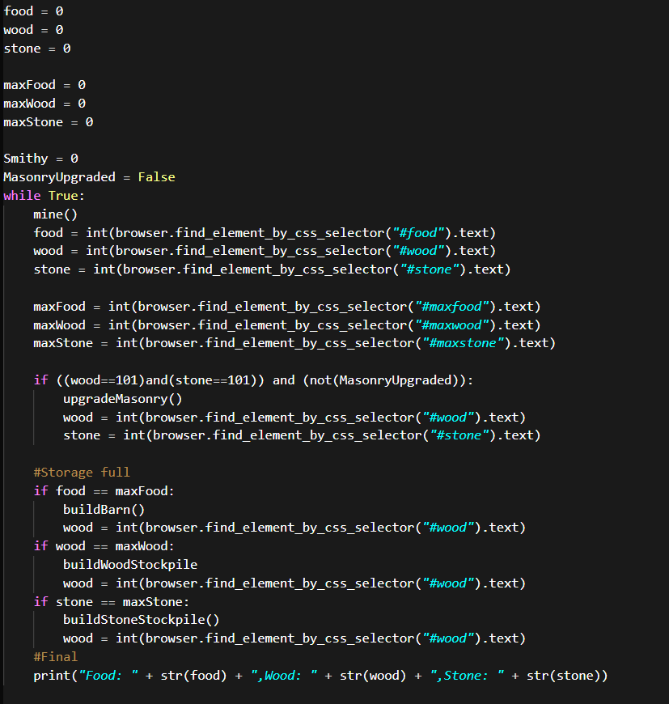

First time using Python
Created on: 3/24/2020
Judging by my Downloads/python-3.7.7-amb64.exe downloaded on
3/20/2020 so I've only been using Python for four days
But because of my experience using Java and some experimentation with
C#, and C++ learning Python's syntax was easy
I love it and hate it
It's like driving a manual car and switching to automatic
But the thing I really love about Python and the reason that
made me want to pick it up as another programming language
is all the resources online for open source Python Modules
Not only do they have such a great community online but
the seamless install of external libraries with Pip is amazing
also Pyinstall and creating a .exe is so much more rewarding and easier
in my opinion than trying to create a Jar file with Java and trying to run it with a .batch
I know not exactly the samething. I feel like perhaps it's because
I haven't really familiarized myself too much with Maven so handling Jar
files with Java on Visual Studio Code is kind of annoying
I've been manually editing the .classpath and doing all sorts of weird stuff
and the worse part is that when I try to export it it doesnt all end up in a little
neat package where the end user can double click and run it like they would with any other
application.

Using Pyinstall with Python I was able to not only create a .exe file of my Python file but also
include external libraries that I used and in this case another executable file which was for the
Google Chrome
I had to use chromedriver.exe along with my Python program that imported from Selenium so that I could
open and control the webbrowser with my python script.
I ran into some trouble when I was testing my bot.exe program on a clean windows pc that didn't have any
python language or anything dev related already installed
Because it didn't already have chromedriver.exe installed on the computer the bot.exe wouldn't run
So I included chromedriver.exe inside the bot.exe so the program and all its modules and classes were
located in one place so when the user clicks on the bot.exe the python script has all the necessary components
to run. And the best part is the user doesn't even need to have python installed on their PC because of the way
Pyinstall turn the python script into a .exe
The only thing the end user has to make sure is correct is that their computer can run a .exe file and that
they are running the latest version of Chrome.
This is what happens when the user clicks on the exe file. The bot opens up the terminal which
is optional but I'm keeping for now so I can check for any errors
Than it open the browser and goes to the location of the game CivClicker
And begins to gather Food, Cut Wood, and Mine Stone. If it ever reaches
max capacity for the resources storage levels than it will go to the build menu
and buy more storage for the given resource

I did create some methods for getting other upgrades
but I'm still familirazing myself with python so my level of code organization
isn't as great as it is with Java so I'm trying to learn two things at once
Right now my bot atleast collects resources and can build and move to different menus.
So adding the rest of the buildings shouldn't be to challenging
What is a bug that I have noticed is that in order for the Python script to click on an element
It need to be somewhat in range of the current window
So if I scroll to the bottom of the page and force to script to stay down at bottom
while it's trying to zoom back up to see the element what will happen is that bot will hit
an error and the bot will come to a stop
I just need to find out the exact error and figure out a way to let the program continue
Perhaps a "try and except" where I can just run a thread(few seconds) until the
user stops pulling on the screen and than the bot can continue
Another thing that bothers me is that the bot only starts a new session of the game
there is no way for the User to currently load a pre existing save file and have the bot
increase their already existing civilization
This is because selenium initiates a version of Chrome that is similar to incognito
The version of Chrome that is launched has no cookies from the user profile
Because the save files for the game are saved through cookies I would need
to find away to prompt the user to enter the Path to their Chrome Profile so I can
access the cookie data and read/write the website save file to/from their main Chrome Profile
So that way the next time they start the bot the bot will still be working on their
previous civilization without loss of progress
Another aspect of the game that I have yet to implement is the recruitment of workers
at first I wanted the bot to do all the work but if the bot is really going to play the game
than it should play it in the most optimal way I can possibly design it. In the game when you create
workers they can produce resources at a x per seconds rate and this rate is only refreshed by the Javascript
every fraction of a second
I could have the bot mercelessly continue to spam collect resources but the result would be slower
over time because it would be like doing 1 + 1 + 1 1000X times a second vs having the bot create workers that
can generater 10_000 food per second and it ends up being less resource heavy for the computer and
actually appears faster to the end user because it isn't slowing down the browser
Also at some point the workers will be making more resources than the bots because given enough time
they can be making over 10K+ in resources per second meanwhile I calculate that my bots at top
PC efficiency are only opperating at about 20-30 sources per second (each resources) it's definently
a different rate depanding on the PC (2009 HP Pavilion)
My first "bot" attempt if I can even call it that was by using a Python Script that listened for a
keyboard press on a particular letter and would than spam click the left mouse button until I clicked
that same keyboard key to pause it
This actually didn't result in much faster production that the workers because again the website was only
able to refresh the values at such a slow rate that spam clicking resources would be a waste of time
That time clicking the elements for collecting resources could better be spent on also hiring workers
which would compound the earning for my civilisation as I'll constantly be investing in them over time
My far future plans for this bot is to run multiple instances of the bot and have it learn from previous playthroughs
so that it can record the amount of time for it's civlization to progress to a particular level and
find out which is the most optimal way to play the game to reach that point. But to really make it fair
I think the bots would have to be capped at a certain clicks per second so that differences in machine hardware
can be accounted for and strategies can be properly weighed
Basically if you can only click 1 click per second what is that most optimal way to advance your civilization
to a certain point
Thanks for listening,
peace.
ps next time I will record a video and post it to youtube I can embed it in my website so you can watch
it here like a demonstration of my bot in action.